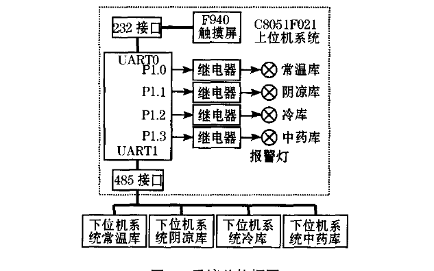
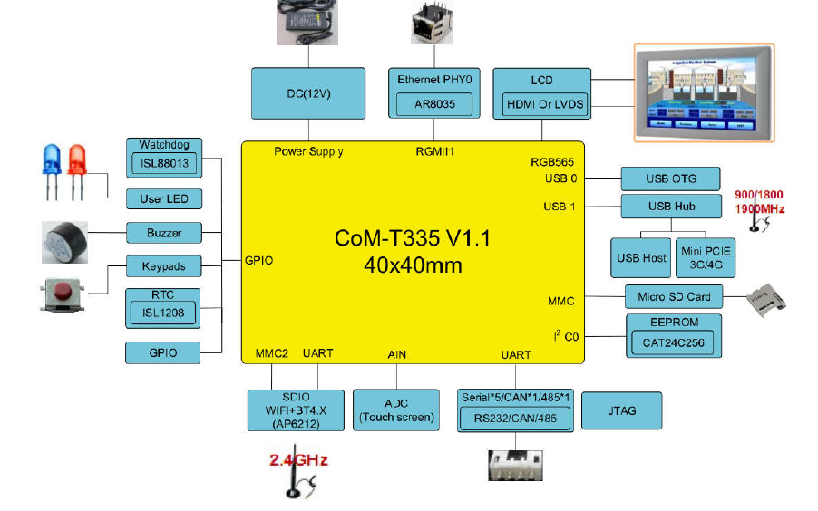
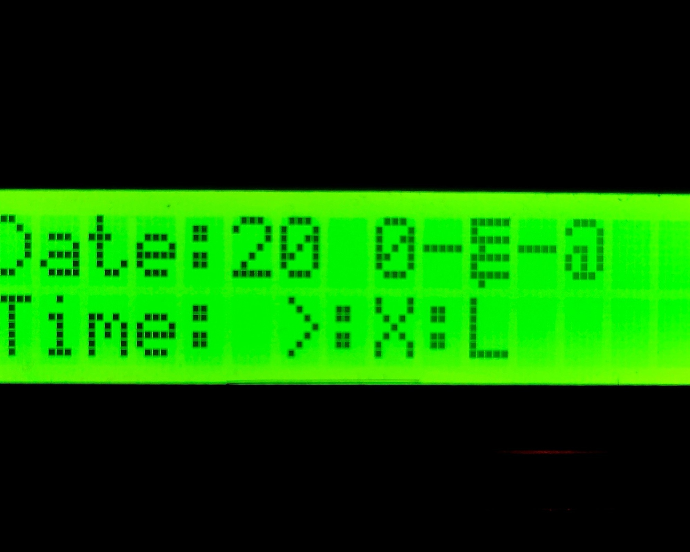

在Linux下没有像keli那样好用的IDE来开发51单片机，开发环境只能自己搭建了。
第一步：安装交叉编译工具
a) 安装SDCC
sudo apt-get install sdcc
b)测试SDCC是否可用，这是个网上找的简单的流水灯代码 test.c， 用来测试
#include "8051.h"
#define uint unsigned int
#define uchar unsigned char
uchar tab[8] = {0x01,0x02,0x04,0x08,0x10,0x20,0x40,0x80};
void Delay(uint xms)
{
uint i,j;
for(i=xms;i>0;i--)
for(j=110;j>0;j--);
}
void main()
{
uchar i;
while(1)
{
for(i=0;i<8;i++)
{
P1 = tab[i];
Delay(100);
}
}
}12345678910111213141516171819202122232425
编译它: sdcc test.c
会生成这么多的文件：
test.lk test.map test.rel test.sym test.asm test.ihx test.lst test.mem test.rst
我们只需要其中的 test.ihx
packihx file.ihx >file.hex 转换为hex文件
接着下载hex2bin文件，网址(http://sourceforge.net/projects/hex2bin/files/latest/download)。命令：hex2bin sourcefile.hex。之后就会生成sourcefile.bin文件。
hextobin file.hex 生成bin文件
注意：为了方便以后调用hex2bin，可以将路径加入到 .bashrc文件
在～/.bashrc最后一行加上Hex2bin 所在的文件夹位置
PATH=$PATH:/home/leo/workspace/c51/Hex2bin-2.31
可以写个makefile文件，编译方便些
这是我写的makefile：
test.hex : test.c
sdcc test.c
packihx test.ihx > test.hex
hex2bin test.hex
clean:
rm -rf *.asm *.lst *.mem *.rst *.lnk *.rel *.sym *.ihx *.hex *.map
~ 1234567
第二步：安装烧写工具
a)下载stcflash：github.com/laborer/stcflash，这是个用python写的向单片机烧写bin文件的软件
b)安装环境：sudo apt-get install python-serial
c)烧写 ： sudo python ./stcflash.py test.bin
声明：本文由入驻电子说专栏的作者撰写或者网上转载，观点仅代表作者本人，不代表电子发烧友网立场。如有侵权或者其他问题，请联系举报。侵权投诉
原文标题：在Linux下搭建51单片机的开发烧写环境
文章出处：【微信号：wujianying_danpianji，微信公众号：单片机精讲吴鉴鹰】欢迎添加关注！文章转载请注明出处。
相关推荐
内含程序，原理图
发表于 12-29 19:15 •
79次
阅读

Docker 是一个开源的应用容器引擎，让开发者可以打包他们的应用以及依赖包到一个可移植的容器中，然....
如果在以前，我也会推荐要么使用Mac，要么使用Linux.但是现在有了强大的Pycharm，我推荐使....
KVM，是一个开源的系统虚拟化模块，自 Linux 2.6.20 之后集成在 Linux 的各个主要....
中午跟比较要好的同事一块吃饭，同事刚从单片机开发转Linux开发没多久，目前负责给客户开发一个USB....
51单片机很简单，寄存器少，片上外设少，可直接操作寄存器和io，适合初学者，适合简单系统的开发
arduino是一款开源硬件，库函数...
发表于 12-27 15:32 •
325次
阅读
近些年来，从RISC-V体系结构位到存储增强功能，西部数据（Western Digital）在Lin....
 汽车玩家 发表于
汽车玩家 发表于 12-27 09:44
•
197次
阅读
单片机设计：基于51单片机的99码表设计
软件环境：Proteus8.0 + Keil4
....
发表于 12-26 16:05 •
130次
阅读
全书分三部分：汇编语言程序设计、C语言程序设计和RTX51实时多任务操作系统。内容编排符合初学者先了....
发表于 12-26 15:59 •
53次
阅读
本文档的主要内容详细介绍的是51单片机多任务定时器和公共堆栈与私堆栈的源代码和工程文件。
发表于 12-26 15:37 •
25次
阅读
本文档的主要内容详细介绍的是51单片机简单操作系统的定时器切换任务的工程文件免费下载。
发表于 12-26 15:37 •
28次
阅读
2020年即将到来，Linux在接下来又会有怎样的发展？Joey Sneddon 给出了关于Linu....
牵手一起梦 发表于 12-26 14:15
•
358次
阅读
Firefly-RK3288是Firefly团队精心打造的一体机主板，采用瑞芯核4核芯片RK3288....
发表于 12-26 11:56 •
22次
阅读
本项目的主要功能：当是白天时（光线较强时），不需要开灯，系统进入节能的超低功耗休眠模式；当傍晚来临时....
发表于 12-26 11:39 •
51次
阅读
本文档的主要内容详细介绍的是51单片机的UART基础知识说明包括了：1 串行通信基础,2 串行口....
发表于 12-26 10:34 •
39次
阅读
2020年即将到来，Linux在接下来又会有怎样的发展？Omg Ubuntu 网站的作者Joey S....
汽车玩家 发表于 12-26 09:45
•
349次
阅读
51单片机加按键控制led花样闪烁（非用中断),51中用一个main主函数来控制led花样闪烁，实现和用中断控制差不多的效果......
发表于 12-25 19:39 •
228次
阅读
由于搭载了16.1英寸的大屏，MagicBook Pro锐龙版笔记本机身的空间也更大，为搭载强力AM....
牵手一起梦 发表于 12-25 17:41
•
1132次
阅读
事物总有个核心，复杂的事物总可以模块化、层次化, 嵌入式Linux也如此。学习嵌入式Linux困难，主要因为涉及知识和概念过多，即...
发表于 12-25 16:37 •
762次
阅读
什么叫全双工串口呢？一般来说，只能接受或只能发送的称为单工串行;既可接收又可发送，但不能同时进行的称....
发表于 12-25 10:27 •
84次
阅读
小白一枚，protues仿真DS18b20温度显示，但一直显示零，查资料改了几次都失败，全部程序和仿真在附件中，请大神们帮忙看看是不...
发表于 12-24 18:39 •
272次
阅读
全书分为5篇38章。首先介绍了51系列单片机的开发概述及单片机的基本结构，接着介绍了单片机的汇编程序....
发表于 12-24 15:41 •
48次
阅读
本书通过大量的典型实例，详细介绍了51单片机各种C语言应用专题程序设计的流程、方法、技巧及设计思想。....
发表于 12-24 15:41 •
65次
阅读
求51单片机和PC之间进行串行通信的程序，PC将一帧数据发送给单片机，单片机能接收该帧数据，再发送给PC显示出来
...
发表于 12-24 15:24 •
322次
阅读
USB4的规范在今年9月份发布，基于雷电3，并与之向后兼容。英特尔的开源部门在10月份添加了USB4....
牵手一起梦 发表于 12-24 15:11
•
464次
阅读
据最新消息，Linux 5.6版内核会正式支持USB4，预计将在2020年4月份发布。
工程师邓生 发表于 12-24 10:14
•
480次
阅读
据最新消息， Linux 5.6版内核会正式支持USB4，预计将在2020年4月份发布。
汽车玩家 发表于 12-24 09:10
•
327次
阅读
基于紫金桥跨平台跨平台实时数据库，可Linux系统下快速实现一个监控系统。
1、组态流程和传统windows组态差不多，所以上手很快...
发表于 12-23 15:46 •
143次
阅读
本文档的主要内容详细介绍的是使用51单片机实现DS1302时钟LCD1602显示的源代码和工程文件免....
发表于 12-23 08:00 •
52次
阅读

随着生产水平的提高，热电设备对温度控制的要求也越来越高，而传感器技术和单片机技术等不断发展，为智能温....
发表于 12-23 08:00 •
32次
阅读
刚刚学用linux VIM,切换到输入模式？i在当前光标所在字符的前面,转为输入模式
a在当前光标所在字符的后面,转为输入模式
我不...
发表于 12-22 14:55 •
205次
阅读
本文档的主要内容详细介绍的是51单片机入门经典教程的程序示例合集免费下载。
发表于 12-20 18:01 •
147次
阅读
本文介绍了51单片机控制SL811HS实现USB主机的硬件设计和底层驱动的编写。其中，底层驱动部分主....
发表于 12-20 17:27 •
57次
阅读

目前普遍采用的MCS51 和PIC 系列单片机通常只有一个（或没有）UART异步串行通信接口，在应用....
发表于 12-20 15:32 •
63次
阅读
随着整个应用模式越来越先进、越来越自动化、越来越复杂，企业内部可以接入网络的终端形态也越来越多变，端....
发表于 12-19 17:07 •
120次
阅读
定时器/计数器T0工作在方式0时，16位计数器只用了13位，即TH0的高8位和TL0的低5位，组成一....
发表于 12-19 15:51 •
160次
阅读
介绍了一种多库房药品库的远程温湿度监控系统。系统为两级分布式控制结构，上、下位机系统处理器采用高速C....
发表于 12-19 15:51 •
62次
阅读

在图形方面，已经主要的Broadcom“ V3D”驱动程序堆栈在其Mesa方面的Gallium3D驱....
发表于 12-19 14:01 •
158次
阅读
开源推动者与Android专家 Jack Wallen 近日发表了一篇文章，预测了未来的开源局势，他....
汽车玩家 发表于 12-19 10:29
•
557次
阅读
本书从实际工程应用入手，以实验过程和实验现象为主导，由浅入深、循序渐进地讲述使用C语言为51单片机编....
发表于 12-18 16:14 •
78次
阅读
先说说PPM波，从图中可以看出周期为20ms，冠丽控实际是6通控，但预留两通没有使用。通道的高电平区....
发表于 12-18 15:24 •
102次
阅读
本文档的主要内容详细介绍的是使用51单片机制作霓虹灯的程序和工程文件。
发表于 12-18 08:00 •
60次
阅读
介绍了CRC（循环冗余码校验）原理及集成混合信号片上系统单片机C8051F的新特性，推导获得以字节为....
发表于 12-17 16:09 •
59次
阅读

51单片机的RAM分为两个部分，一块是片内RAM，一块是片外RAM。标准51的片内RAM地址从0x0....
发表于 12-17 15:47 •
145次
阅读

音乐喷泉作为一种观赏性较高的艺术水景已经得到了越来越广泛的应用。论述了一个以C8051F单片机为核心....
发表于 12-17 14:57 •
67次
阅读

EAC-T335 开发板基于TI AM335X 处理器，运行主频最高1G，支持Linux，WinCE....
发表于 12-17 14:31 •
71次
阅读

会刷新，但显示乱码，芯片stc89c52，LCD1602，DS1302，请问这是什么情况？
代码如下:
#include "DS1302.h"
#include "...
发表于 12-16 15:03 •
254次
阅读

根据消息报道，国外厂商推出了一款Duex Pro笔记本便携扩展屏，12.5英寸，通过支架与笔记本固定....
牵手一起梦 发表于 12-16 14:55
•
682次
阅读
近日，Raspberry Pi 基金会 CEO Eben Upton宣布，上周某个时候（应该是周二）....
牵手一起梦 发表于 12-16 14:26
•
493次
阅读
统一操作系统UOS的独特之处就在于，其针对国产芯片进行了适配，比如龙芯、飞腾、兆芯、海光和华为。也就....
据悉，树莓派（Raspberry Pi）是基于Linux的单片机电脑，由英国树莓派基金会开发，目的是....
汽车玩家 发表于 12-16 11:03
•
540次
阅读
用C8051F340 12Mhz内部晶振，想让LED间隔闪烁2S，但实际用示波器测出来大概间隔为330ms，去掉初始化端口程序间隔约2.7S，...
发表于 12-13 17:03 •
365次
阅读
本文档的主要内容详细介绍的是ESP32教程之如何在Windows系统上搭建开发环境。
发表于 12-13 15:34 •
84次
阅读
本文以EVB335x 为例讲解如何在CoM335X系列产品上移植无线网卡驱动及其使用。关于EVB33....
发表于 12-12 16:12 •
82次
阅读
本文主要描述如何在COM335X的Linux系统上修改网络phy芯片，以及双网络的配置及使用。包括u....
发表于 12-12 16:12 •
63次
阅读
本文档的主要内容详细介绍的是51单片机C语言程序100例电子书免费下载
发表于 12-12 16:11 •
213次
阅读
本文档的主要内容详细介绍的是Linux的使用基础详细资料说明包括了：1.linux 简介，2.如何使....
发表于 12-12 15:45 •
111次
阅读
今年9月时，微软曾确认正在为Linux构建Teams客户端。时隔两个多月，微软在官方博客中宣布Mic....
汽车玩家 发表于 12-12 11:19
•
1308次
阅读
本书从Git的基本知识和操作方法入手，详细介绍了GitHub的各种功能，GitHub与其他工具或服务....
发表于 12-12 08:00 •
62次
阅读
本书讲解了Linux操作系统的工作机制以及运行Linux系统所需的常用工具和命令。根据系统启动的大体....
发表于 12-12 08:00 •
72次
阅读
TI AM437x高性能处理器基于ARM Cortex-A9内核。
这些处理器通过3D图形加速得到增强，可实现丰富的图形用户界面，还配备了协处理器，用于进行确定性实时处理（包括EtherCAT，PROFIBUS，EnDat等工业通信协议）。该器件支持高级操作系统（HLOS）。基于Linux的® 可从TI免费获取。其它HLOS可从TI的设计网络和生态系统合作伙伴处获取。
这些器件支持对采用较低性能ARM内核的系统升级，并提供更新外设，包括QSPI-NOR和LPDDR2等存储器选项。
这些处理器包含功能方框图中显示的子系统，并且后跟相应的“说明”中添加了更多信息说明。
处理器子系统基于ARM Cortex-A9内核，PowerVR SGX™图形加速器子系统提供3D图形加速功能以支持显示和高级用户界面。
可编程实时单元子系统和工业通信子系统（PRU-ICSS与ARM内核分离，允许单独操作和计时，以实现更高的效率和灵活性.PRU-ICSS支持更多外设接口和EtherCAT，PROFINET，EtherNet /IP，PROFIBUS，以太网Powerlink，Sercos，EnDat等...
发表于 09-25 11:51 •
114次
阅读

 0
0

{kind=link}
评论